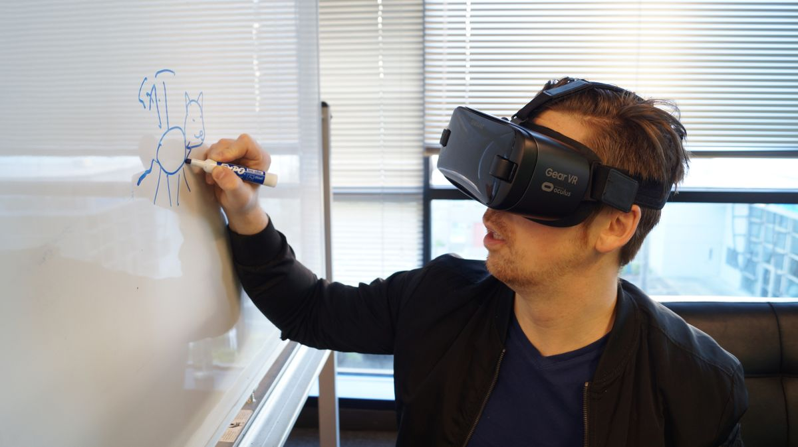

Holograms are a hardware problem. I design for the hardware.
Iris Kwan designs interfaces for volumetric displays, light-field exhibits and AR headsets — the kind visitors operate with their hands, in real rooms, under real light. Every project starts with a two-week feasibility spike on the actual device, and every figure on this site — viewing cones, triangle budgets, package sizes — is a number a build was held to.

Fig. 01 · The specimen
One rig, four layers. Count them.
SPEC-01 is a calibration rig of the kind every project starts from: a prism core, three interface panels at working depths, the anchor points of a tracked volume, and the ring a hand travels to operate it. It is built in code on this page — drag it, strip its layers, and watch the geometry budget change. That arithmetic is the job.
- Objects
- –
- Triangles
- –
- Vertices
- –
- Orbit
- –
- Layers on
- –
Counted, not claimed. The figures are summed from the actual geometry on the bench when the page loads — switch layers off and the budget drops by exactly what those layers cost. Every client build gets the same sheet: a budget agreed before design, and a count delivered with the files.
Fig. 02 · The register
Projects, with the numbers they were built to.
Client names are the studio's fictional stand-ins; platforms, budgets and constraints are the real conditions of this kind of work. Three of these are written up as full case files.
| Project | Client | Platform | Deliverable | Budget | Year | Status |
|---|---|---|---|---|---|---|
| SPEC-01 Calibration PrismThe specimen in the viewer above | Studio | WebGL, this page | Interactive specimen | Counted live | 2026 | Studio |
| Meridian Light-Field InterfaceTouchless exhibit UI for a sculpture collection | Regional art gallery | Looking Glass 27″ light-field | Unity build + glTF scenes | 84k tris / scene | 2025 | Shipped |
| Northline Maintenance OverlayHands-free pump servicing, step by step | Industrial equipment OEM | HoloLens 2 | Unity / MRTK build, offline | ≤100k tris · 60 fps | 2025 | Shipped |
| Velora Volumetric ConfiguratorSofas in volume, in-store and at home | Furniture retailer | Looking Glass Go + web fallback | glTF / USDZ package | 46 MB package | 2024 | Shipped |
| Tidepool Gesture StudyDwell vs pinch, measured with 40 testers | University HCI lab | Magic Leap 2 | Research prototype | 38k tris | 2024 | Prototype |
| Atlas Trade-Fair TableA reflection display, labelled as one | Events agency | Pyramid reflection display | Looping volumetric film + UI | 4K loop · 90 s | 2026 | In build |
Atlas is a reflection display — a screen, a pyramid and a dark room, not a true hologram. It is labelled that way in the venue's own signage, and here. Every platform on this page is named by what it actually does.
Fig. 03 · Fees
Spatial work is bought in two steps: a spike, then a build.
Nobody can honestly quote a hologram from a brief alone — the platform decides what is possible. So the first purchase is always the same: two weeks on the real device, ending in a written verdict. If it says build, the fee comes off the project.
| Engagement | What it covers | Fee |
|---|---|---|
| Feasibility spike | Two weeks, one platform, one core interaction, tested with real users; written verdict — build, adapt or stop | C$2,400 fixed |
| Interface project | Design, build and device testing through to a shipped install, with the budget sheet delivered alongside the files | from C$16,000 |
| Day rate | Consultancy, interface audits of existing installs, rescue work on other studios' builds | C$850 / day |
| Support retainer | OS-update breakage cover, content updates, quarterly performance re-test on the shipping hardware | from C$600 / mo |
What moves the price
- Platform count — every headset and display is a separate test matrix, not a re-export.
- CAD cleanup — client models rarely arrive usable; decimation and re-topology are real line items.
- Custom tracking — anchored content in difficult light or moving spaces costs spikes of its own.
- Content volume — scenes, products, languages; priced per unit after the spike, never guessed.
- Hardware & travel — loan devices and site visits are passed through at cost, agreed in advance.
Fig. 04 · Method
Five stages, and the device is in the room from stage one.
- STAGE 01
Brief & device truth
The exact hardware is named before anything is designed — model, firmware, room, light. If the device can't do the brief, you hear it this week, not at install.
- STAGE 02
Feasibility spike
Two weeks: the hardest interaction, built rough on the real device and put in front of real hands. Ends in a written verdict with measured numbers.
- STAGE 03
Build
Interface and content built against the budget sheet — triangles, draw calls, package size — with weekly builds you can run on your own hardware.
- STAGE 04
Device testing
The shipping build, in lighting matched to the venue, with at least twelve testers for anything gesture-driven. Failures are fixed here, not discovered by your visitors.
- STAGE 05
Delivery & support
Source files, the budget sheet and a reset guide your staff can actually use — plus 90 days of OS-update cover, because platforms break things.
Fig. 05 · From the gallery floor
“Iris told us in week two that our visitors would never see the outer third of the display — then showed us the cone measurements and rebuilt the interface inside them. Forty-one thousand visitors later, our admissions staff reset the exhibit in under a minute and the interface has never once been the problem.”
Exhibitions manager, Meridian Gallery — on the Meridian Light-Field Interface
Start with the spike.
Two weeks, one device, a written verdict — build, adapt or stop. It is the cheapest honest answer in spatial computing.
Book a feasibility spike or write directly — iris@holomesh.studio